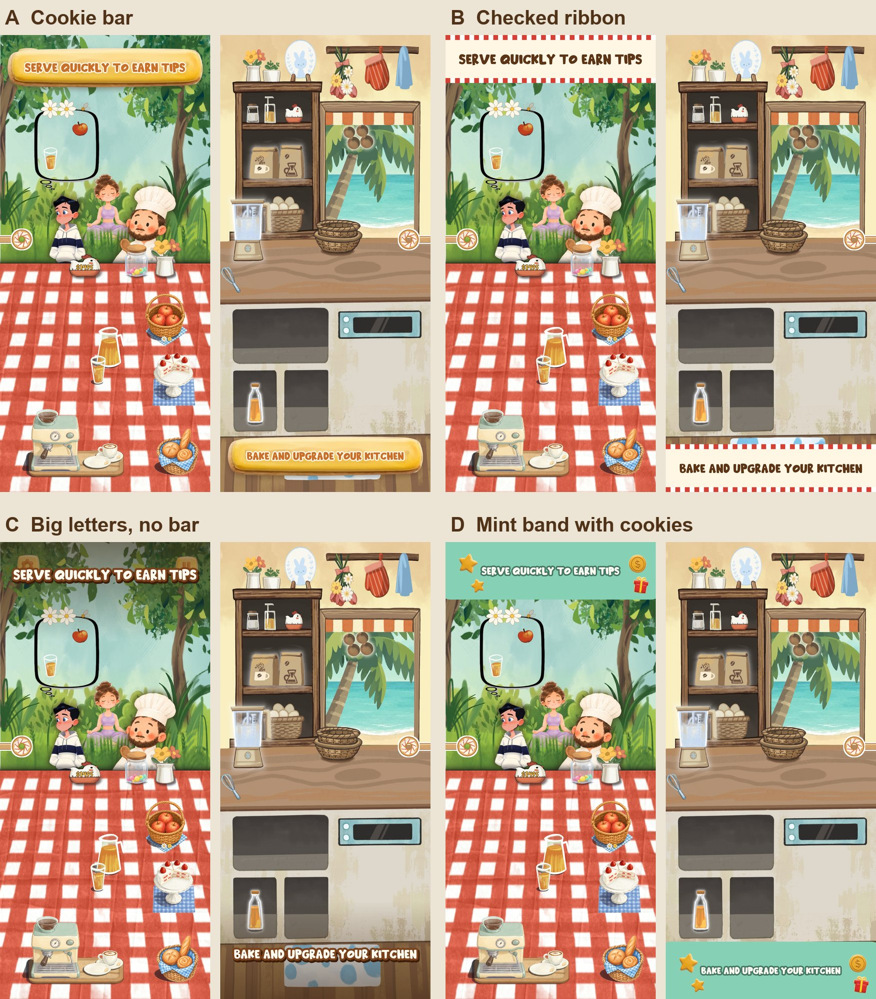
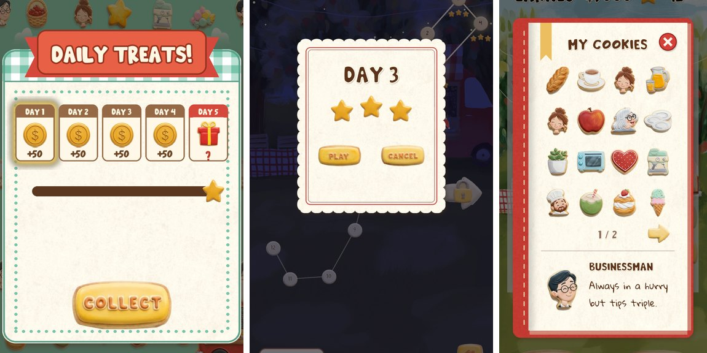
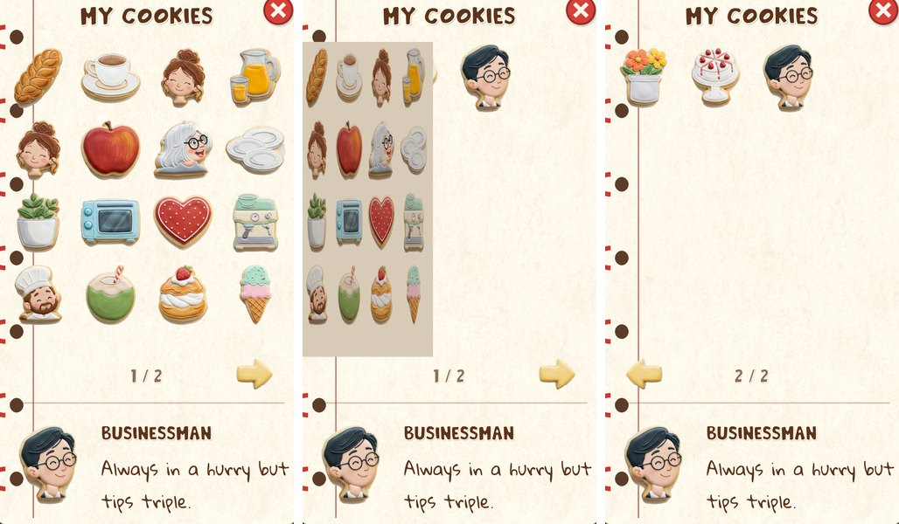
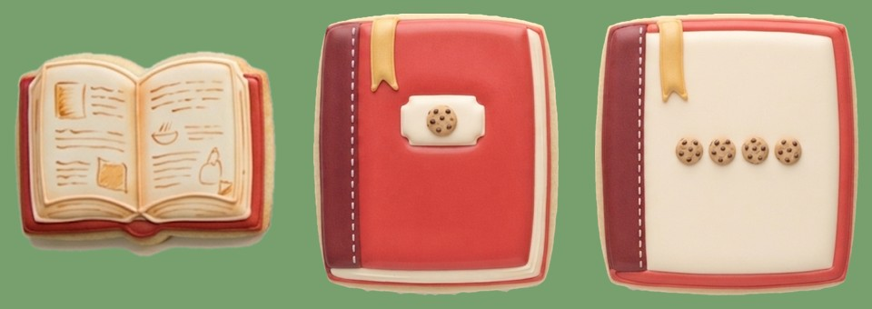
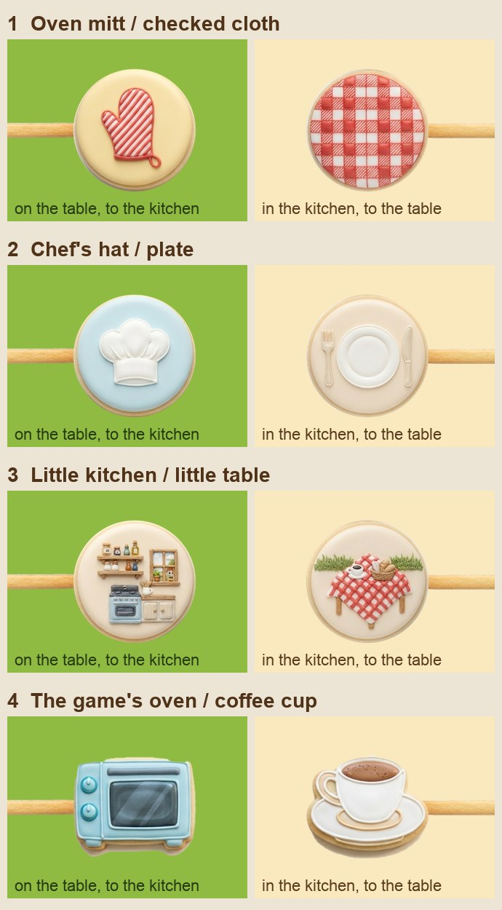

Food Truck Cafe
19 November. 2026.11.18 is live on the App Store; test build 2026.11.19 (0) in TestFlight.
1Next
You
To pick (Current): the page turn sound; the handle's kitchen and table cookies; the Daily Treats design; screenshot captions.
To look at: your picks in the game (day card, book, page turn, book button); cake frame 2.
Q&A: forcing updates.
Build: say when; today's second list is in the project only.
Me
Waiting on your picks.
2Q&A
Can we force players to update?
- Yes, from the next version on. Apple has no switch for it; the game does it itself: at start it asks the App Store which version is on sale and, if the player's is older, shows a card with an Update button that opens the store page.
- Two ways: soft (Update / Later, asked once a day) or hard (no Later: the game cannot be played until updated).
- Limits: it only works in versions that contain the check, so players on 2026.11.18 or older are never asked. With no internet the game just starts. A new version can take a few hours to show in every country, so the hard way should only block when the store really offers something newer.
- Most iPhones update by themselves within a few days; a hard block mostly matters when an old version would break (a changed save, a removed feature). My suggestion: the soft card now; keep the hard block for the day it is needed.
3Current
Store screenshots: four looks for the captions, for the next release. Same words; only the banner changes.

- A matches the cookie buttons. B matches the game's own cards (the arrange and tutorial banners). C covers the least of the game. D matches the new start menu.
Your picks, in the game. In the project, in no build (you said to wait).

- Cookie book (5): the cookies and words now keep clear of the spine and the page's edges; the close button sits on the page with room round it; the ribbon moved to the left so it does not crowd it.
- Day card (C): made a little shorter than the wood board, so the day, stars and buttons fill it. The pause menu is still wood: say if it should get C too.
The page turn, redone: a sheet of the book's own paper swings over at the spine, its free edge lifting towards you, darker along that edge, with a bright rim and a soft shadow on the page under it. About half a second.

The book's button now matches the open book: the same red cover, stitched spine and gold ribbon (Gemini). An open version is there too if you prefer it.

Page turn sound: five to choose from. Free to use (Mixkit licence or CC0). Until you pick, the turn plays the game's own paper sound. The four you do not pick are deleted, as you asked.
1 Light flick, thin page (0.29 s, the quietest)
2 Soft, slower turn of a big page (0.56 s)
3 Thick sketchbook paper, a low "fwap" (0.30 s)
4 Glossy magazine page (0.41 s)
5 Gentle, even paper whoosh (0.54 s)
Pull handle: a kitchen cookie on the way to the kitchen, a table cookie on the way back. Four pairs, on the biscuit stick. Left: the handle you see on the table. Right: the one in the kitchen.

- Pairs can be mixed (say, the little kitchen with the checked cloth).
Strawberry cake, frame 2: the gap is clean. Not in the game yet.


- The strokes were what was left of the slice that went. The same patch of plate is clean in frame 3, so I laid that bare plate into frame 2's gap, up to the front slice's own edge. Nothing else on ChatGPT's sheet is touched.
Also done today. In the project, in no build.

- 1 star for 999 coins: a card on the coins tab, can be bought again and again; the star goes to the star shop's count. Tried: 2,500 coins and two buys left 502 coins and 2 more stars; a third was refused. Coin-bought stars belong to the game in play, like coins (a new game starts without them; stars bought with money stay).
- Tutorial drags (you said ship it), banner on day 2 only, coffee bags' glow while arranging, table handle movable any time, 2 stars at 80 %, rating popup after day 3, coffee machine $650 on its card too: all in.
Daily Treats: the mint card (H) is in, and three designs for its other pieces. H is in the project (no build). The designs are painted mock-ups made from the game's own cookies, paper and letters; day 1 is collected, day 2 is today, day 5 is the gift.

- 1 Stamp card: like a cafe loyalty card. Each day is a dashed circle; a collected day has its coin cookie stamped in with a tick, today's glows, day 5 holds the gift. No bar: the row of stamps is the progress.
- 2 Sticker notes: the title on checked tape, each day a small coloured note taped on (like the menu's stickers), today's bigger and tilted; a dotted line runs to the star.
- 3 Cookie trail: the title iced on a cookie bar, the days as cookies along a biscuit stick (the handle's stick) that ends at the star.
- All three keep the cookie coin, "+50" and the Collect cookie. Pieces can be mixed (say, 1's stamps with 2's tape title).
4MVP
Nothing open.
5Backlog
Nothing open.
6Analysis
Nothing open.
7Marketing
Nothing open.